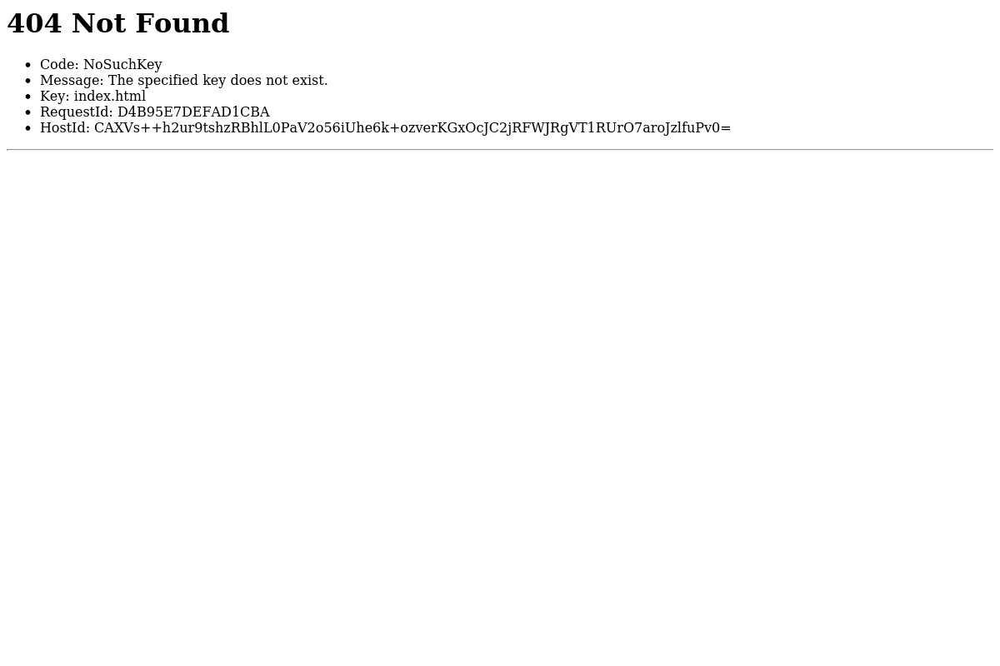

Generated by LazyRecon on Tue May 21 12:33:50 EDT 2019
Port 80 Port 443 
; <<>> DiG 9.11.4-2-Debian <<>> legacy-branding.seek.com.au ;; global options: +cmd ;; Got answer: ;; ->>HEADER<<- opcode: QUERY, status: NOERROR, id: 21702 ;; flags: qr rd ra; QUERY: 1, ANSWER: 5, AUTHORITY: 0, ADDITIONAL: 1 ;; OPT PSEUDOSECTION: ; EDNS: version: 0, flags:; MBZ: 0x0005, udp: 512 ;; QUESTION SECTION: ;legacy-branding.seek.com.au. IN A ;; ANSWER SECTION: legacy-branding.seek.com.au. 5 IN CNAME legacy.branding.prod.outfra.xyz. legacy.branding.prod.outfra.xyz. 5 IN A 13.35.8.119 legacy.branding.prod.outfra.xyz. 5 IN A 13.35.8.73 legacy.branding.prod.outfra.xyz. 5 IN A 13.35.8.122 legacy.branding.prod.outfra.xyz. 5 IN A 13.35.8.27 ;; Query time: 206 msec ;; SERVER: 192.168.58.2#53(192.168.58.2) ;; WHEN: Tue May 21 12:33:51 EDT 2019 ;; MSG SIZE rcvd: 165
legacy-branding.seek.com.au is an alias for legacy.branding.prod.outfra.xyz. legacy.branding.prod.outfra.xyz has address 13.35.8.27 legacy.branding.prod.outfra.xyz has address 13.35.8.122 legacy.branding.prod.outfra.xyz has address 13.35.8.73 legacy.branding.prod.outfra.xyz has address 13.35.8.119
HTTP/1.1 301 Moved Permanently Server: CloudFront Date: Tue, 21 May 2019 16:33:52 GMT Content-Type: text/html Content-Length: 183 Connection: keep-alive Location: https://legacy-branding.seek.com.au/ X-Cache: Redirect from cloudfront Via: 1.1 f92e2b771ebc524db2f478f72162e565.cloudfront.net (CloudFront) X-Amz-Cf-Id: 5XgoJZ9iw7x0N-VSrq4MOuPO6Nol4HwDrJapqYOt0V7100K1fq07yw== HTTP/2 404 content-type: text/html; charset=utf-8 content-length: 345 date: Tue, 21 May 2019 16:33:52 GMT server: AmazonS3 x-cache: Error from cloudfront via: 1.1 2e5c8abdb85052408706556682f77e82.cloudfront.net (CloudFront) x-amz-cf-id: Cqru-Ta0TmsI1XVZiWTnU7WJDBXlS_85z3eN_iyXazn78PMoerjHbQ==
nmap -sV -T3 -Pn -p3868,3366,8443,8080,9443,9091,3000,8000,5900,8081,6000,10000,8181,3306,5000,4000,8888,5432,15672,9999,161,4044,7077,4040,9000,8089,443,7447,7080,8880,8983,5673,7443 Starting Nmap 7.70 ( https://nmap.org ) at 2019-05-21 12:33 EDT Stats: 0:00:00 elapsed; 0 hosts completed (0 up), 0 undergoing Host Discovery Parallel DNS resolution of 1 host. Timing: About 0.00% done Nmap scan report for legacy-branding.seek.com.au (13.35.8.122) Host is up (0.12s latency). Other addresses for legacy-branding.seek.com.au (not scanned): 13.35.8.73 13.35.8.119 13.35.8.27 rDNS record for 13.35.8.122: server-13-35-8-122.sin5.r.cloudfront.net Not shown: 32 filtered ports PORT STATE SERVICE VERSION 443/tcp open ssl/http Amazon CloudFront httpd Service detection performed. Please report any incorrect results at https://nmap.org/submit/ . Nmap done: 1 IP address (1 host up) scanned in 18.79 seconds